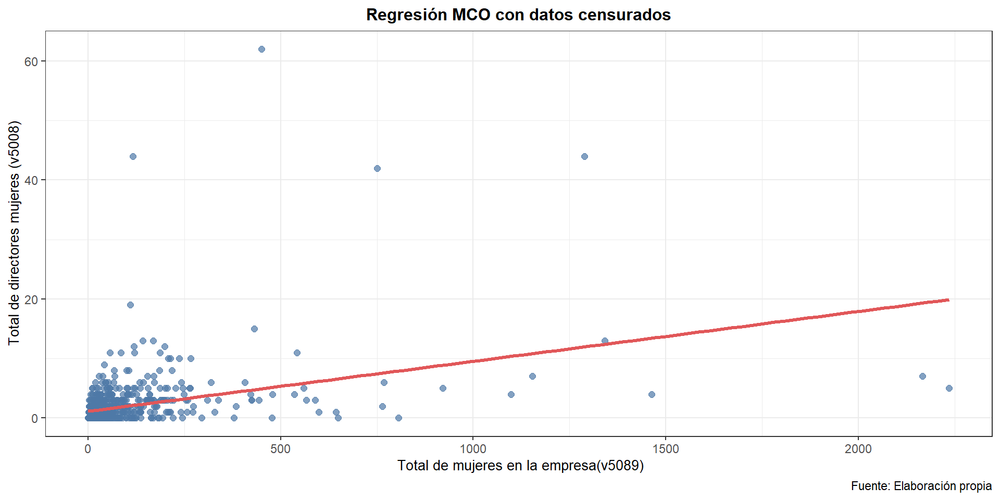
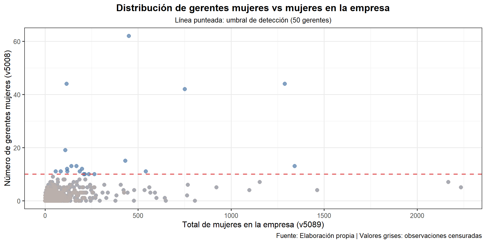

Min. 1st Qu. Median Mean 3rd Qu. Max.
0.000 0.000 1.000 1.806 2.000 62.000 ´Modelo Tobit´
Iza J.,Guerra D., Lopez G., Michilena M., Oña M.
Tema de Investigación
Factores determinantes de la participación femenina en cargos gerenciales
Sector manufacturero ecuatoriano (2023)
Pregunta de Investigación
Objetivos
Objetivo General
Analizar los determinantes de participación femenina en gerencia mediante modelo Tobit (ENESEM 2023)
Objetivos Específicos
1. Identificar variables clave:
- Económicas (antigüedad, sector)
- Sociodemográficas (número de mujeres en empresas)
- Organizacionales (políticas de equidad)
- Económicas (antigüedad, sector)
2. Estimar efectos marginales con modelo Tobit
3. Evaluar significancia estadística
Literatura
Teoría del capital humano (Becker, 1964): Explica brechas laborales por diferencias en formación, pero estudios (Cotter et al., 2001) muestran que persisten desigualdades incluso con igual cualificación.
Techo de cristal: Barreras invisibles que limitan el ascenso femenino a altos cargos, reduciendo su representación en gerencia (Deloitte, 2016).
Segmentación laboral (Doeringer & Piore, 1971): Mercado dividido en sectores; mujeres se concentran en roles peor remunerados, mientras hombres dominan puestos gerenciales.
Base de datos: ENESEM 2023 INEC
Ecuaciones
Variables del Estudio
Variable Dependiente
V5008: Número de mujeres en cargos gerenciales
- Tipo: Cuantitativa discreta
- Rango: 0 a N
Variables Independientes
| Variable | Tipo | Signo Esperado |
|---|---|---|
| des_tamano (Tamaño) | Categórica ordinal | + |
| edad (Antigüedad empresa) | Numérica | ± |
| totalpeoc (Personal ocupado) | Numérica | + |
| v5089 (Mujeres en la empresa) | Numérica | + |
| capital_social_nac_privado | Numérica (USD) | + |
| utilidad (Utilidad empresa) | Binaria (1/0) | + |
Exploración de la variable dependiente:
Histograma de la cantidad de mujeres gerentes

Distribución de gerentes mujeres en empresas
Estimación MCO
Determinantes de Gerentes Mujeres en Empresas
=============================================================
Dependent variable:
-----------------------------------------
Número de gerentes mujeres (v5008)
-------------------------------------------------------------
Tamaño empresa -0.24
(0.87)
Edad(años) -0.02
(0.47)
T. Personal ocupado 0.04***
(0.01)
CapitalSNP(USD) 0.003***
(0.0005)
T.Mujeres(v5089) 0.001
(0.003)
Utilidad(1=Sí/0=No) 0.0002
(0.002)
utilidad -0.23
(0.41)
Constant -0.06
(0.51)
-------------------------------------------------------------
Observations 782
R2 0.21
Adjusted R2 0.21
Residual Std. Error 3.63 (df = 774)
F Statistic 30.22*** (df = 7; 774)
=============================================================
Note: *p<0.1; **p<0.05; ***p<0.01
Fuente: Elaboración propia con datos INECInterpretaciones MCO
Empresas medianas A: -0.244 Una empresa mediana A contrata 24% menos mujeres gerentes vs empresa grande
Empresas medianas tipo B: -0.025 Las empresas medianas tipo A presentan una reducción de 2,5% en el número gerentes mujeres en comparación con las empresas grandes
Edad: 0.04 Por cada año adicional de de la empresa, el número de contratación de mujeres aumenta en 4%
Interpretaciones MCO
Personal ocupado: 0.003 Por cada empleado adicional el número de gerentes mujeres se incrementa en 0.3%
Capital social: 0.001 Por cada dólar adicional, se espera un aumento de 0.1% de gerentes mujeres
v5089: 0.0002 Por cada mujer adicional contratada en la empresa (variable), el número de gerentes mujeres se incrementa en 0.02%
Utilidad: -0.225 Si una empresa tiene utilidades contrata 22.5% menos mujeres vs empresa sin utilidades
Ajuste de la variable Y
A continuación se verifica si la variable Y ajustada tiene variables menores que cero. Tiene valores negativos,por lo que podemos concluir que no es un buen ajuste.
Min. 1st Qu. Median Mean 3rd Qu. Max.
-0.1833 0.7323 1.4053 1.8056 2.2935 21.6872 Evaluación del Modelo TOBIT
Por lo antes mencionado ajustamos la variable dependiente \(V5008\) con un modelo TOBIT
Verificamos el cumplimiento de la variable \(V5008\) para usar el modelo Tobit y la convertimos en una variable dicotómica.
0 1
42.19949 57.80051 Modelo Tobit
=======================================================
Dependent variable:
---------------------------
v5008
-------------------------------------------------------
des_tamanoMediana Empresa A -1.569
(1.517)
des_tamanoMediana Empresa B -0.394
(0.763)
edad 0.061***
(0.011)
totalpeoc 0.003***
(0.001)
capital_social_nac_privado -0.001
(0.005)
v5089 0.001
(0.002)
utilidad 0.358
(0.662)
logSigma 1.635***
(0.035)
Constant -3.021***
(0.820)
-------------------------------------------------------
Observations 782
Log Likelihood -1,587.280
Akaike Inf. Crit. 3,192.561
Bayesian Inf. Crit. 3,234.517
=======================================================
Note: *p<0.1; **p<0.05; ***p<0.01Comparación del Moldeo MCO y TOBIT
Estimación Tobit y MCO del número de gerentes en las empresas de industria manufacturera
=============================================================================
Dependent variable:
-------------------------------------------------
Variable dependiente: Número de mujeres gerentes
MCO Tobit
(1) (2)
-----------------------------------------------------------------------------
des_tamanoMediana Empresa A -0.24 -1.57
(0.87) (1.52)
des_tamanoMediana Empresa B -0.02 -0.39
(0.47) (0.76)
edad 0.04*** 0.06***
(0.01) (0.01)
totalpeoc 0.003*** 0.003***
(0.0005) (0.001)
capital_social_nac_privado 0.001 -0.001
(0.003) (0.01)
v5089 0.0002 0.001
(0.002) (0.002)
utilidad -0.23 0.36
(0.41) (0.66)
logSigma 1.63***
(0.03)
Constant -0.06 -3.02***
(0.51) (0.82)
-----------------------------------------------------------------------------
Observations 782 782
R2 0.21
Adjusted R2 0.21
Log Likelihood -1,587.28
Akaike Inf. Crit. 3,192.56
Bayesian Inf. Crit. 3,234.52
Residual Std. Error 3.63
F Statistic 30.22***
=============================================================================
Note: *p<0.1; **p<0.05; ***p<0.01Efectos marginales del Modelo TOBIT
Marg. Eff. Std. Error t value Pr(>|t|)
des_tamanoMediana Empresa A -0.77495840 0.74871473 -1.0351 0.3010
des_tamanoMediana Empresa B -0.19466658 0.37663479 -0.5169 0.6054
edad 0.03037490 0.00562853 5.3966 9.039e-08 ***
totalpeoc 0.00151946 0.00034802 4.3661 1.437e-05 ***
capital_social_nac_privado -0.00052302 0.00257255 -0.2033 0.8389
v5089 0.00064362 0.00106843 0.6024 0.5471
utilidad 0.17675952 0.32703230 0.5405 0.5890
---
Signif. codes: 0 '***' 0.001 '**' 0.01 '*' 0.05 '.' 0.1 ' ' 1Interpretaciones
Empresas medianas A: -0,774 Una empresa mediana A contrata 77,4% menos mujeres gerentes vs empresa grande
Empresas medianas tipo B -0,194 Las empresas medianas tipo A presentan una reducción de 19,4% en el número gerentes mujeres en comparación con las empresas grandes
Edad: 0.030 Por cada año adicional de de la empresa, el número de contratación de mujeres aumenta en 3%
Personal ocupado: 0.002 Por cada empleado adicional el número de gerentes mujeres se incrementa en 0.2%
Interpretaciones
Capital social: -0,001 Por cada dólar adicional, se espera una reducción de 0.1% de gerentes mujeres
v5089: 0.0001 Por cada mujer adicional contratada en la empresa (variable), el número de gerentes mujeres se incrementa en 0.01%
Utilidad: 0.1767 Si una empresa tiene utilidades contrata 17,67% más mujeres vs empresa sin utilidades
No linealidad del modelo Tobit
===============================================
Dependent variable:
---------------------------
v5008
-----------------------------------------------
edad 0.094***
(0.012)
logSigma 1.726***
(0.035)
Constant -2.935***
(0.434)
-----------------------------------------------
Observations 782
Log Likelihood -1,637.777
Akaike Inf. Crit. 3,281.554
Bayesian Inf. Crit. 3,295.539
===============================================
Note: *p<0.1; **p<0.05; ***p<0.01Curva de regresión Tobit

Interpretación:
En el modelo MCO los efectos son constantes, mientras que, los efectos en el modelo TOBIT no lo son. Por lo tanto, mientras mayor es la edad de la empresa esto genera mayor contratación de mujeres en puestos gerenciales, es decir, cada efecto es mayor debido al aprendizaje empresarial.
Evaluación informal del Modelo TOBIT (Problemas de Especificación)
Estimación Tobit y MCO del número de gerentes mujeres
===================================================================================
Dependent variable:
-------------------------------------------------------
Variable dependiente: Números de gerentes mujeres 0 y 1
-----------------------------------------------------------------------------------
des_tamanoMediana Empresa A -0.295
(0.314)
des_tamanoMediana Empresa B -0.011
(0.167)
edad 0.007**
(0.003)
totalpeoc 0.001**
(0.0003)
capital_social_nac_privado -0.0003
(0.001)
v5089 0.002
(0.001)
utilidad 0.285*
(0.149)
Constant -0.513***
(0.193)
-----------------------------------------------------------------------------------
Observations 782
Log Likelihood -486.616
Akaike Inf. Crit. 989.232
===================================================================================
Note: *p<0.1; **p<0.05; ***p<0.01Evaluación de la validez del Modelo Tobit
Procedemos a usar los coeficientes para la comparación entre el modelo Probit y el Tobit, el objetivo es evaluar la validez del modelo Tobit.
probit beta/sigma diferencia
(Intercept) -0.5132284395 -0.5890417781 7.581334e-02
des_tamanoMediana Empresa A -0.2948359258 -0.3058928602 1.105693e-02
des_tamanoMediana Empresa B -0.0113282522 -0.0768391156 6.551086e-02
edad 0.0071125954 0.0119896291 -4.877034e-03
totalpeoc 0.0008155761 0.0005997654 2.158107e-04
capital_social_nac_privado -0.0002752117 -0.0002064469 -6.876479e-05
v5089 0.0017444861 0.0002540515 1.490435e-03
utilidad 0.2849110700 0.0697708087 2.151403e-01Calculando Sigma
logSigma
5.128223 Se obtuvo que sigma=5,13, por lo cúal se puede reemplazar en la ecuación Tobit y al comparar esos betas con los de Probit se evidencia que no hay una “drástica” diferencia, por lo que, el modelo TOBIT es valido. Caso contrario se debería aplicar el Modelo de dos partes
Conclusiones
- La variables edad (Años de funcionamiento de la empresa)y totalpeoc (Total personal ocupado) en los modelos MCO y **TOBIT*, resultaron estadísticamente significativas al 99%. Esto nos indica que a mayor edad de la empresa manufacturera existe un aumento en la contratación de mujeres que ocupan cargos en la gerencia de la empresa.
Anexo
Diseño muestral
Modelo con diseño muestral
=======================================================
Dependent variable:
---------------------------
v5008
-------------------------------------------------------
des_tamanoMediana Empresa A -0.385
(0.292)
des_tamanoMediana Empresa B -0.399
(0.255)
edad 0.020*
(0.012)
v5089 0.008***
(0.003)
capital_social_nac_privado -0.004
(0.003)
utilidad 0.142
(0.477)
Constant 0.737
(0.524)
-------------------------------------------------------
Observations 782
Log Likelihood -2,111.692
Akaike Inf. Crit. 4,237.384
=======================================================
Note: *p<0.1; **p<0.05; ***p<0.01Regresión MCO con datos censurados
Diagrama de dispersión y recta de regresión (MCO)
Nivel de censura
Distribución de observaciones con nivel de detección